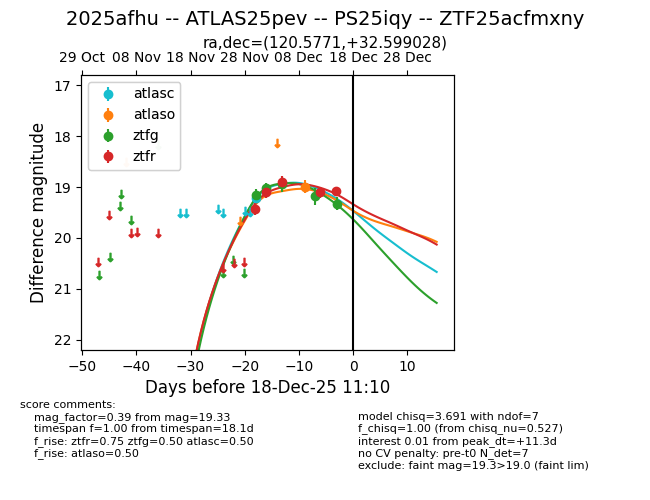
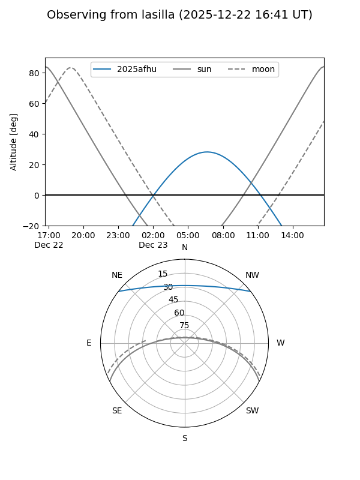
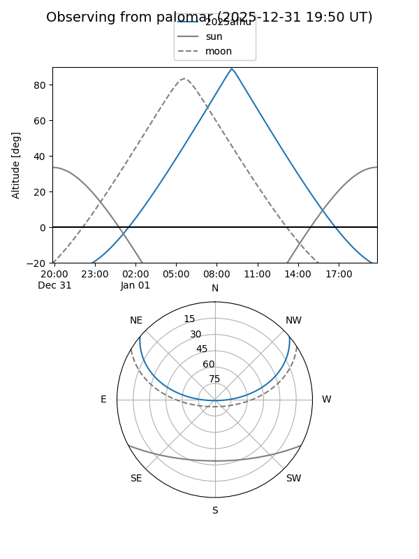
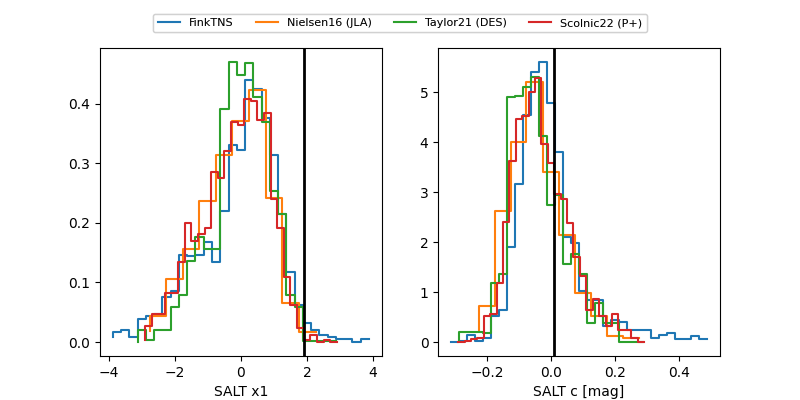

2025afhu
Target 2025afhu at 2025-12-29 09:26
Aliases and brokers:
FINK: fink-portal.org/ZTF25acfmxny
Lasair: lasair-ztf.lsst.ac.uk/objects/ZTF25acfmxny
ALeRCE: alerce.online/object/ZTF25acfmxny
TNS: wis-tns.org/object/2025afhu
YSE: ziggy.ucolick.org/yse/transient_detail/2025afhu
alt names
ZTF25acfmxny (ztf,fink_ztf)
2025afhu (tns,yse)
ATLAS25pev (atlas)
PS25iqy (panstarrs)
Coordinates:
equatorial (ra, dec) = 120.5771,+32.59903
equatorial (HMS+DMS) = 08:02:18.51,+32:35:56.50
galactic (l, b) = (188.6179,+28.28402)
Flags:
Photometry:
last atlasc=19.22, atlaso=18.99, ztfg=19.59, ztfr=19.27
1 atlasc, 1 atlaso, 7 ztfg, 7 ztfr detections
Lightcurve

Visibility


Additional plots
